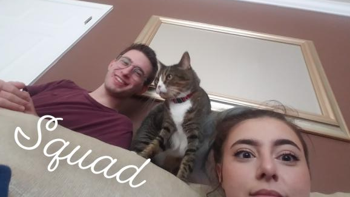
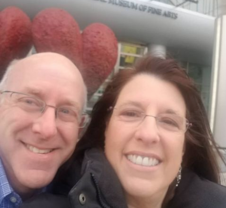
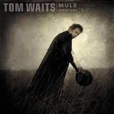

And I Study Mechanical Engineering (Major) and Computer Science (Minor)
Field or Career
Engineering, to me, represents a certain type of problem solving: solving problems by enabling and engaging a change of perspective. Some engineering problems are absurd and complex, but can be abstracted and simplified over and over again until suddenly there's a solution. I think twisty puzzles are lovely examples of engineering principles. The puzzle shown is a Pentultimate Puzzle designed by Jason Smith. Twisty puzzles are especially devious because they're visually simple, and often playfully colored. But for someone to be able to solve a twisty puzzle, they usually have to break out a pencil and paper, document observations, and act methodically. Engineering can change lives for individual people, and sometimes engineering solutions can be introduced to large groups at the same time, but I truly believe that engineering's impact is not inherently global. I have the privilege of using the Internet, which is an incredible invention built on the back of uncountable hours of engineering work. But a large portion of the global population still doesn't have Internet, so has the Internet changed the world? Not the whole world, no. The Internet pushed some groups into new eras of invention, but also left many behind. It's complicated. Many major innovations follow this same pattern of only being available to a subset of people, even if that process leaves everyone else behind. However, I know that my career path has made me a better person. I can look at problems from a clear, focused perspective, and methodically figure out where I am and where I'm trying to go -- in engineering/academic contexts or otherwise. This problem solving process liberated me from many unfocused and unorganized tendencies I'd had for my whole life until college. I look forward to using these problem solving skills in a way that is genuinely constructive for more people than just myself.
My nuclear family and the people who influenced me are not the same. But my nuclear family, extended family, and friends all encouraged me to pursue engineering -- in fact, I don't think anyone seemed surprised by my decision, nor disapproving of my decision. But my nuclear family is probably the most dependable among these people, at least for support. My mother is probably the most generally supportive person I know, and my personality is just like my father's. My only sibling, my twin sister, is definitely the most reliable person that I know who's my age, and we both progress further by depending on each other.



The above images depict, in a broad sense, my family and home. Admittedly, I felt pressured to use less-conventional definitions of "family" and "home." Regardless, if I truly believed my family were limited to my blood relatives and that a home were limited to a house, then I would've expressed that here. The following text feels honest even on a visceral level, but it's treacly. Maybe a month ago, I was unexpectedly reminded of my own mortality. I funneled my resulting anxiety into a thought experiment: Assuming I'm as able-bodied and able-minded as I currently am, what would my ideal "last day on Earth" (or last living day) look like? I envisioned myself and a large group of people on a long porch/deck/balcony, eating barbeque and generally enjoying each others' company. The emotional connection between everyone was so overwhelmingly loving. While most folks at this imaginary barbeque of mine weren't related to me by blood, I'd consider anyone with whom I share a mutual love connection -- in the broadest sense, definitely including non-romantic love -- to be my family. The balcony shown above is my neighbor's, and plenty of real-world factors would prevent me from bringing my whole family onto that balcony. I included that picture specifically because the colors of the balcony, chairs, and tree leaves are bright and charming.
Some of the most important members of my family are those in my nuclear family: my mother, my father, and my twin sister. We're all cordial amongst each other, and we support each other through everything. If I'm concerned about my amibitions or about the future, my parents are extremely understanding and open-minded. If my sister or I are struggling with the present, we can talk to each other about anything, and I'm confident we could overcome virtually anything.
Where my nuclear family helps me achieve the things I want to achieve, many other members of my family help me identify what I want to achieve in the first place. My freshman year roommate in particular broadened my worldview immensely, but many of my other friends also engage in activism etc. You may notice a lack of house pictures, considering I mentioned in the caption that I'd included pictures of home. I used to associate houses and homes similarly, until a brief, shocking period when I lived in sketchy off-campus housing. During that period, I listened to lots of songs about house-versus-home. The house/home songs which most resonated with me were "House Where Nobody Lives" by Tom Waits and "Homebody" by Nai Palm. The former describes home as the love inside a house, and the latter describes home as a feeling in someone's own body. My synthesis of these ideas, plus my own experiences, is that a home is an environment of comfort. Just as a house protects its inhabitants from physical storms, home protects its inhabitant from emotional storms. As I progress into a career and develop myself as an adult, my family and my home are my foundation. No matter where I go, I can find new family and can I bring home with me. Neither my home, my family, nor myself determine my exact path or destination. But my home and family enable my exploration.
Entertainment
I use media for information and entertainment, which takes up a substantial portion of my life. Often my peers and I consume media together - we predominantly communicate in online groupchats nowadays. I honestly don't have a solid idea of the different types of media. I trust newspaper and printed sources a whole lot more than what I see on the Internet, but I use the Internet for almost all of my entertainment, and also to defer me to printed sources. I also stream music a ton, which doesn't affect me in the same way that news media might, but it guides many of my aesthetic decisions. Media is so ubiquitous. Media serves social function because it's almost impossible to separate any facet of life from media. What else would we talk about? I have no vision of recreating or remaking media in my everday life. I merely anticipate navigating media. Even if I make a piece of media, where does it fall in the sea of media? It doesn't even make a ripple, surely. Nor do I reinvent media. I'm pretty sure I consume media as the media-makers intend.
Community
My community is strictly virtual nowadays. Most of my friends are on a single Discord server, and we all chat with each other. Some of my friends, a subset of this Discord server, are in a coronavirus-safe pod. This pod meets in person every weekend to do homework, and we also hang out every so often. In general, I trust in my ability to befriend people. Community is usually fluid, albeit extremely slow. But coronavirus makes it harder to meet new people, and meeting new people is the incentive for community to "flow," so this community that I'm currently a part of feels, for all intents and purposes, permanent.
School
My education at Pitt helped me develop a problem-solving character. I don't know if I could have realized or summoned that ability within myself were it not for college. I anticipate getting textbooks and unofficially learning all the things I want to know. I also intend to go to graduate school at some point, even though not directly after my undergraduate education. I'd like to work for a little while and gain some more focus in what I want to do. I think I want to do controls systems, but I'm currently enrolled in the controls course and I'd like to test the waters first. I did get a taste of controls at robotics co-op, and that was immensely exciting. But higher education is so expensive, it's hard to make a single commitment.
Even now as someone who's almost graduated college, I still feel a little wronged by the American educational system. I think it's wrong to assume an eighteen-year-old would know what to do with their life, or understand the implications of higher education. I still don't have a 100% idea of what I want my career to be.